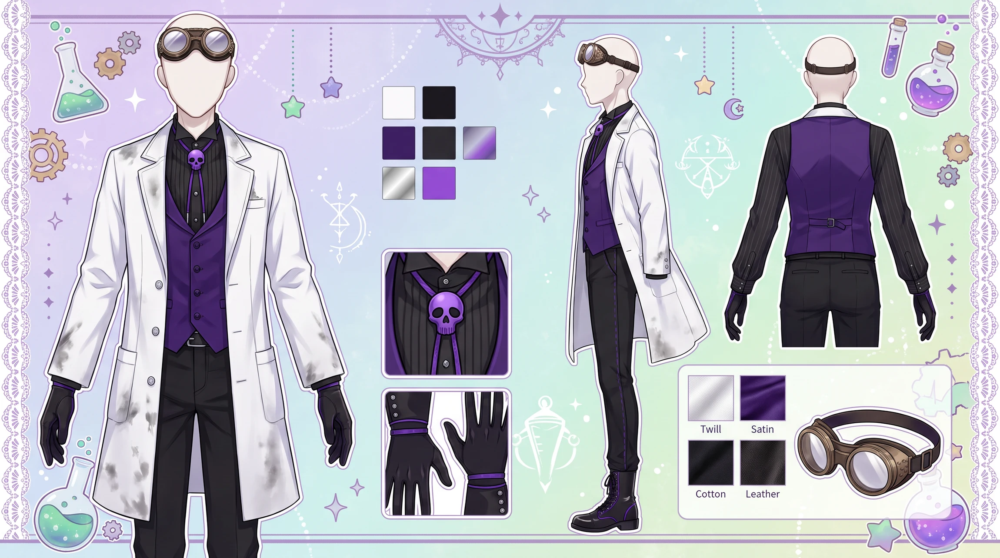
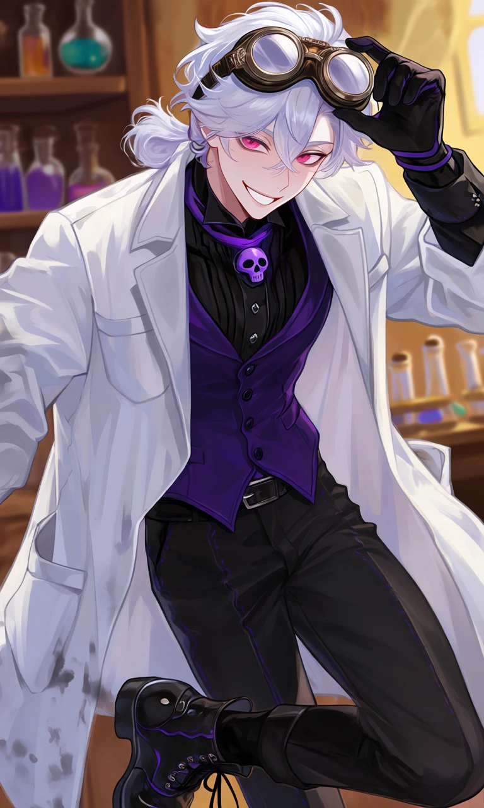
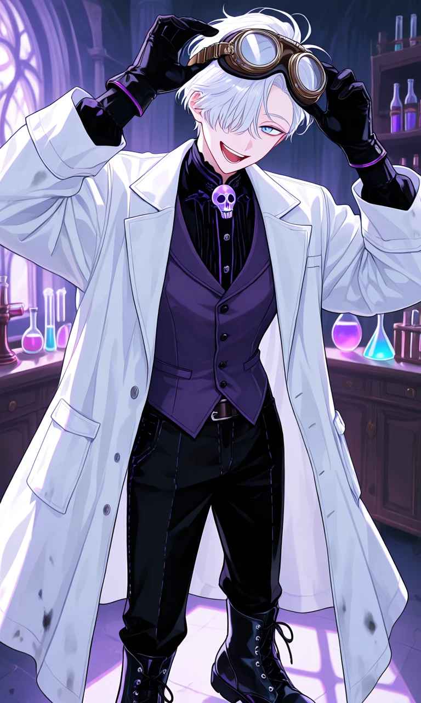

The Violet Experiment

Outfit Prompt
Eccentric gothic mad scientist outfit, whimsical Halloween laboratory fashion, theatrical Victorian-inspired scientific attire, black, white, and deep purple color palette.
A long, slightly oversized white laboratory coat reaching the knees, with wide notched lapels, long sleeves, large utility pockets, and an open front. The coat has a deliberately messy, rumpled appearance, with slightly uneven hems, loose fabric folds, and subtle dark smudges from countless experiments.
Underneath the coat is a fitted black high-collared shirt with deep purple accents, decorative silver buttons, and a slightly gothic Victorian-inspired design.
A dark purple waistcoat with a fitted silhouette, pointed lower hem, and small black buttons down the front, worn over the black shirt.
Slim black trousers with a tailored fit, subtle purple stitching, and a dark leather belt with a silver buckle.
Black protective laboratory gloves extending slightly past the wrists, with dark purple trim.
Large vintage laboratory goggles with round glass lenses, thick dark frames, adjustable leather straps, and small metallic details sits on top of the head.
A decorative purple skull ring with a gothic design.
Black leather lace-up ankle boots with sturdy soles, silver eyelets, and subtle purple detailing.
Playful gothic mad scientist aesthetic, eccentric scientific fashion, slightly disheveled appearance, dramatic layered clothing, whimsical Halloween costume design.
Outfit Examples



